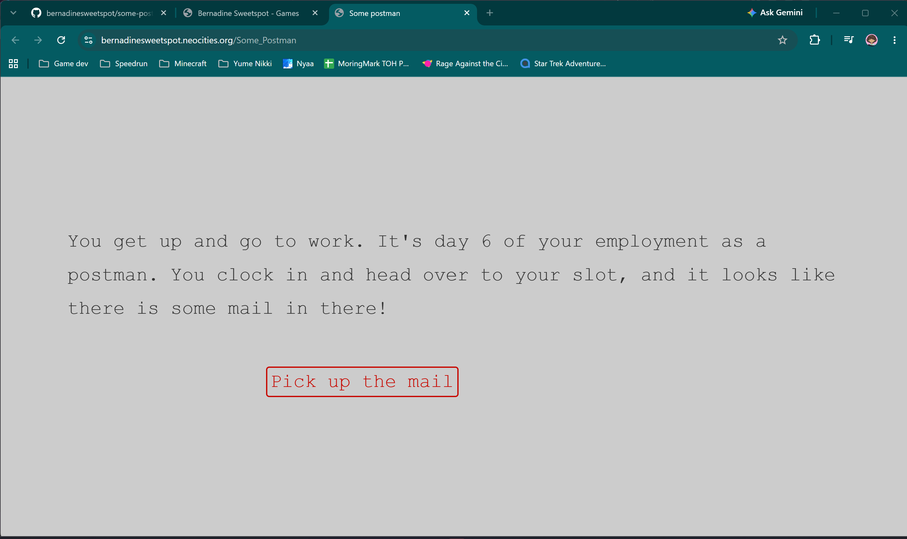

Some Postman
A postman, a pile of love letters, and a very questionable approach to workplace happiness.
Some Postman is a short interactive fiction game created in Twine for the My First Game Jam before I started university. Players take on the role of a postman who has discovered that stealing other people's love letters is a surprisingly effective way to improve his own happiness.
Project Overview
The game was designed as a small experiment in interactive storytelling and player-driven systems. Its deliberately simple premise allowed me to focus on how player choices, variables and consequences could work together to create different outcomes.
Project Gallery
A selection of screenshots of Some Postman being played in browser.

Design Approach
The core idea was to create a simple decision-making loop where every choice has a cost. Stealing love letters increases the protagonist's happiness, but also increases suspicion, forcing the player to balance the two systems.
This created a deliberately silly version of a familiar game-design problem: the player wants to maximise one resource without allowing another to become unmanageable.
Systems & Consequences
The game's central systems are built around happiness and suspicion. The player's behaviour gradually pushes these variables towards different thresholds, with the resulting state determining what happens to the protagonist.
The possible outcomes include being promoted and losing the ability to steal letters, being arrested for becoming too suspicious, or losing the job after happiness falls too low. Each ending turns the player's earlier decisions into a consequence rather than simply providing a different piece of dialogue.
Development
I built Some Postman in Twine, using its branching structure and variable systems to create the game's interactive flow. Because the project was created in a lightweight web-based format, the finished game can be played directly in a browser as an HTML file.
Working with Twine gave me an early opportunity to experiment with branching narrative, state tracking and designing consequences around player behaviour.
Reflection
Some Postman was one of my first attempts at designing a game around interconnected choices and variables. Although small in scope, it introduced ideas that have continued into my later work, particularly the relationship between player decisions and changing game states.
The project also helped establish my interest in interactive narrative before I began university. I have since developed these ideas much further through projects such as Shrimpyscroller and Reel Feelings!, where gameplay systems and narrative choices play a much larger role.
Play the Game
Some Postman is playable directly in the browser as an HTML game.